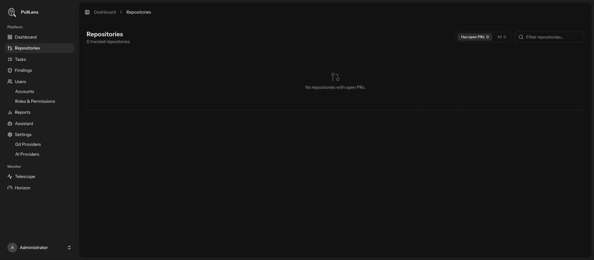
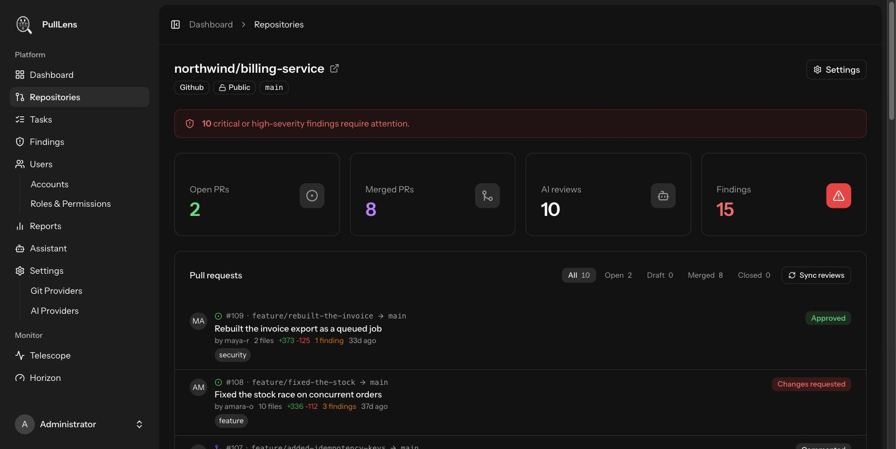

Adding repositories
Granting the GitHub App access is not the same as reviewing. You choose which of the available repositories PullLens actually tracks.
Two separate gates
| Gate | Where | Effect |
|---|---|---|
| App installation | On GitHub | Which repositories PullLens is able to see. |
| Tracking | In PullLens | Which of those it actually watches and reviews. |
So you can install the app organisation-wide and still track only two repositories while you evaluate it.
Selecting repositories
- Go to Settings → Git Providers and open the connected GitHub account.
- Browse available repositories PullLens lists everything the app installation can reach, grouped by account or organisation.
- Tick the ones to track and save. Each selected repository is stored with its default branch and branch list.
- Open a pull request The first review lands within about a minute.
PullLens reviews pull requests that are opened or updated after tracking begins. To review something already open, use Sync reviews on the repository page.
The repositories list
Repositories in the sidebar shows everything tracked, with open pull requests and finding counts. The filter switches between repositories that currently have open pull requests and all of them.

A repository at a glance

| Element | Meaning |
|---|---|
| Open / Merged PRs | Pull request counts by state for this repository. |
| AI reviews | How many reviews PullLens has completed here. |
| Findings | Unresolved findings. The red banner appears when any are critical or high. |
| Pull request list | Open work first, then drafts, then merged. Each row shows the author, branch, line changes, finding count and the latest verdict. |
| Sync reviews | Re-checks every open pull request and queues a review for any that lack one. Rate limited, and it respects your tracked-branch settings. |
| Settings | Per-repository configuration. Every option explained → |
Removing a repository
Untracking stops all reviewing and removes the repository and its history from PullLens. It does not touch anything on GitHub, and it does not uninstall the app - re-tracking later starts fresh.